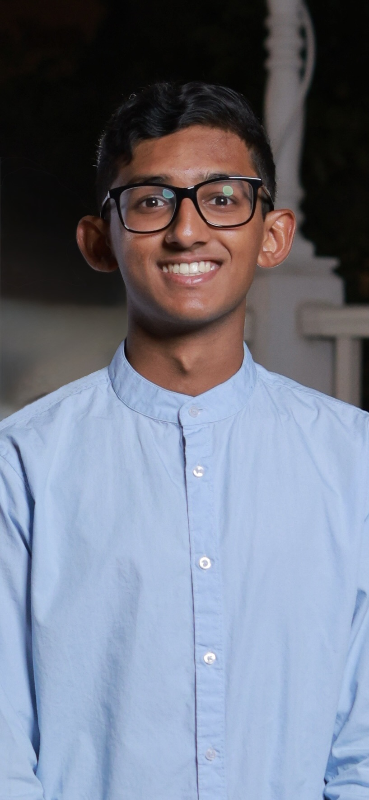

Hi, I'm Jenil Sam,
currently a junior at Texas A&M
University and pursuing a
Bachelor's in Computer Science. I would like to become a software engineer and love building projects
that can help me grow as a developer but also solve problems that are relevant to society and industry. Testing CSCE412 pipeline

I've always enjoyed learning new languages ever since I was young. I'm proficient in three languages besides English, and I bring the same curiosity to programming. Learning a new coding language came naturally, when I started college and I've enjoyed building projects like web apps, small bots, and even a CPU in HDL. I chose Computer Science to be my career goal because it offers an environment of constant learning and adapting to new technologies, this aligns perfectly with my curiosity as I try to explore new things. Whenever I learn a new language, tool or property that I have never seen before, it allows me to expand my knowledge and ways to tackle a situation. I enjoy the challenge of learning an unfamiliar problem and being able to constantly be in that cycle of learning and re-learning have motivated me to push myself further and continue growing as a developer.
On days that I do not feel like coding. I play soccer or pickleball with my friends. These activities keep me active, competitive, and overall happy — on and off the screen.